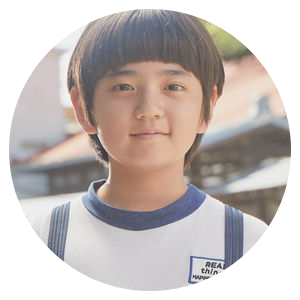

동백 (공효진)#까멜리아 #CEO #필구엄마 #옹산다이애나 #댄저러스히포 |
||
|---|---|---|
황용식 (강하늘)#옹산순경 #범죄와의전쟁 #의인의역사 #촌므파탈 #폭격기 #헐크형히어로 |
||
강종렬 (김지석)#야구스타 #천만종렬 #슈돌딸바보 #제시카남편 #독박육아 #CF스타 #마카오강 |
||
|  | 필구 (김강훈)#동백이지킴이1호 #깡필구 #그래도여덟살 #그래도오락기 |
|
노규태 (오정세)#자칭차기옹산군수 #안경사 #홍자영변호사남편 #시바써리 #노땅콩씨 |
||
홍자영 (염혜란)#옹산엘리트 #이혼전문변호사 #노규태와이프 #도도의아이콘 #곧죽어도자존심 |
||
향미 (손담비)#까멜리아알바 #취미는무전음주 #특기는돈꾸기 #무념무상 #공술원츄 #맹 |